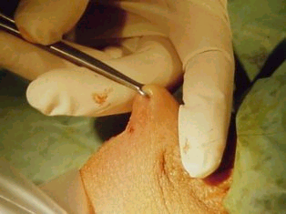
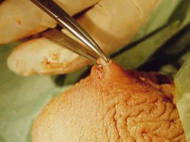
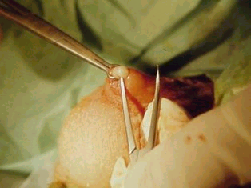
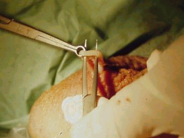
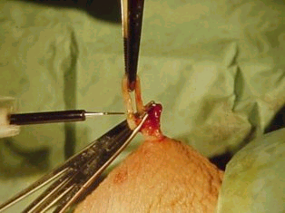
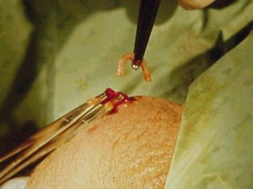

|  |  |  |
|  |  |  |
This page was last updated on
Disclaimer: Information presented in the template should be re-checked and should not be used alone to guide patient care or substitute for clinical judgement.
Note: Please copy text into the EMR prior to adding any HIPPA information. Though no information is being saved/transmitted on this site, typing private information into a web page is generally bad practice.